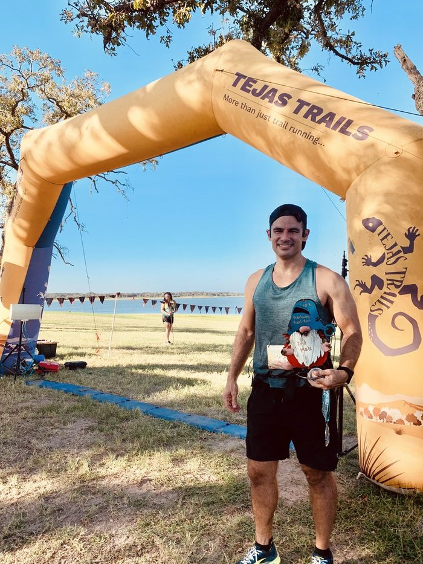
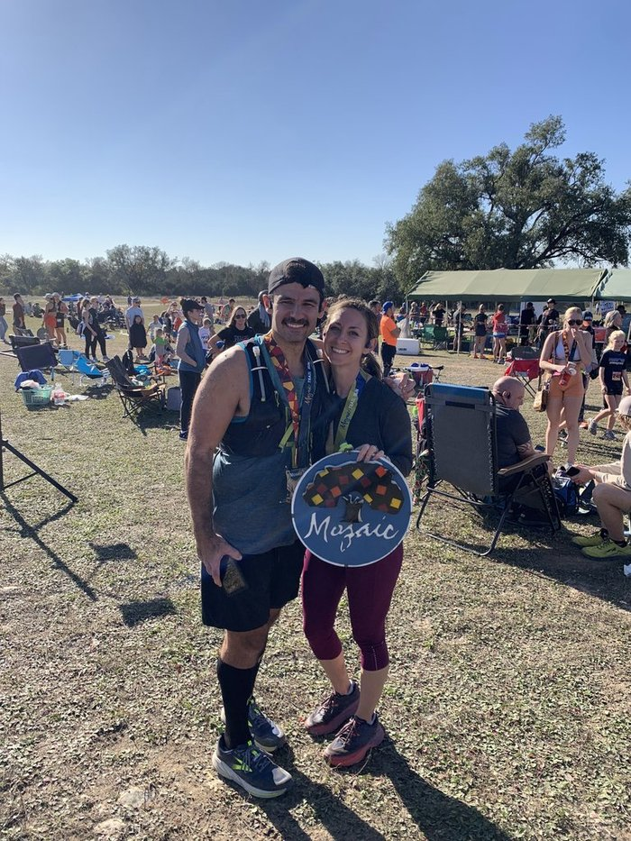

Daily Routines Series
Although I love working from home, it’s taken some time to develop a routine to help keep me focused and provide some boundaries between work and home life. In the following series I’ll describe my routines that are key to a healthy mindset and productive day.
Some of the routines and habits I’ve developed are flexible and some are less so. The first and probably most important parts of my day are running and strength training.
Workouts
I’m an avid long distance runner, and running is a non-negotiable part of my day. During the day I typically have two workouts. One for strength and one to run. The first happens early in the morning, the other is during the day (usually around lunch time). To make sure I complete both workouts I schedule this time in my calendar and block it off. I make sure to set the expecation with family and co-workers I will not be available. This is my time dedicated to focused physical activity and getting fresh air.
Scheduling the time works very well and keeps me accountable. If something comes up during the day - the calendar block just slides around to meet work and family responsibilities. The important thing thing is that the workout doesn’t get removed from the calendar, something else will to make sure it happens.
Along with scheduling a recurring meeting in my calendar, I also write down the workout for the day in my journal. Just something simple like “Lift - Chest” or “Run 45 minutes”. The calendar is mostly for other people to know “Emil’s busy”, the journal is my daily accountablity check-in. When the workout’s complete - I check it off.
How I arrived at two workouts a day
The morning workout is a relatively new addition to my daily routine. I used to do a single workout each day alternating between strength training and running. The last few years strength took a back seat while I prioritized running and focusing on beating my PR. In the past I believed that I didn’t have time or energy for two workouts a day, so as my running volume increased the strength workouts faded and eventually dropped off my schedule completely. This was an utter mistake and led to the mental and physical rut. 🙁
I couldn’t figure out why I wasn’t getting faster. I could run for quite a while but not gaining speed it was just alright. I couldn’t see progress. I didn’t feel confident, or strong, just a whole lot of meh. Something had to change and was strength. I tried alternating workouts each day but that again but it wasn’t challenging enough.
Alternating workout
| Day of Week | Workout |
|---|---|
| Monday | Rest |
| Tuesday | Run |
| Wednesday | Lift |
| Thursday | Run |
| Friday | Lift |
| Saturday | Rest |
| Sunday | Long Run |
I happened to read Can’t Hurt Me by David Goggins while on vacation and the book helped snap me out of my rut. Goggins is known to push his limits physically and mentally and through the process and pain he puts himself through he improves, which translates into the rest of his life (I encourage you to read it if you haven’t, I couldn’t put it down and looking forward to reading his follow up book).
I was in my comfort zone and just making excuses for “not having enough time (or energy)” to run AND lift weights in the same day. Running 5 days a week wasn’t enough, alternating between strength and cardio wasn’t enough. If I really wanted to improve I had to challenge myself more. I love the process of getting a little better each day. I love experimenting and trying new things to see what works and what doesn’t but for whatever reason it wasn’t clicking before. I needed to try something new and just needed a literary ass-kicking to check myself. I consider myself a disciplined person but not enough. I had to level up.
From that point I set a goal that I was going to be among the top 3 for my upcoming race in September and doing two-a-days was how I going to get there. What was left? The work! I set my alarm at 6 AM and told myself in the words of Goggins “This is what we do now”. I ran in the morning and got it done, then during my lunch hour I lifted weights for an hour. After that the day was won.
The first week or so was physically hard but I felt great and eventually I adapted to the schedule. By July, the new routine was a habit and Non-Negotiable. I truly looked forward to the grind. Not only did I obliterate my rut but my form improved, my endurance improved, my overall fitness improved, my self-confidence improved. On top of all that I finished 2nd overall which was just icing on the cake. The important part of all this wasn’t that I accomplished the goal.

It was the discipline. The discipline to get better, AND to challenge myself.
The next training cycle was from September to December for my next race, a trail half-marathon. I tried a new training plan. The training plan had me running 6 days a week instead of just 5, and included running the day after a long run, as well as longer tempo runs, longer intervals which adjusted to my performance. The “This is what we do now” and went for it. I persisted through the cycle and could see speed and ability increase as the tempo runs really stretched my stamina.
I completed the race this past weekend. 2nd in my division, with gas left in the tank. Gas left in the tank means two things. I was well prepared for the race, but I could have gone harder. I’m happy with the race result but the recovery period just ended and it’s time to get back out there.

Current iteration of my workout schedule
| Day of Week | Workout |
|---|---|
| Monday | Morning: Weight lift (Legs) Afternoon: Run |
| Tuesday | Morning: Weight lift (Chest) Afternoon: Run |
| Wednesday | Morning: Weight lift (Back) Afternoon: Run |
| Thursday | Morning: Weight lift (Shoulders) Afternoon: Run |
| Friday | Morning: Weight lift (Arms) Afternoon: Run |
| Saturday | Rest |
| Sunday | Long Run |
Take away
What ever you’re trying to do and can’t seem to find the time, you CAN do it. It just takes some effort and thought to make it fit in your schedule. I had to force myself to wake up early to get in the extra workout. I didn’t like it at first and there are days that I want to stay in bed, but there is never a day I regret getting up early when I’m done with my workout. I used simple tools to keep myself accountable. Start small, keep it simple and get going.